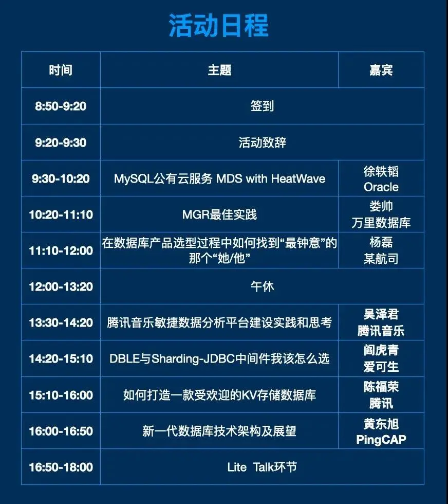

3306π社区专访 | MGR如何用作跨中心多活解决方案？
近日，3306π社区新一代数据库技术论坛将于5月22日在广州再度启航。因此，3306π特邀万里数据库CTO娄帅，就万里数据库团队在MGR方面的技术研究和应用实践等技术问题进行了专题访谈，并向广大技术开发者提供了GreatSQL产品试用，希望以GreatDB团队的技术实践经验给广大技术开发者提供一些经验借鉴。
万里数据库CTO 娄帅
演讲时间：5月22日10:20-11:10
演讲主题：MGR最佳实践
· 访谈大纲 ·
1、娄老师在MGR方面颇有造诣了，能否给大家推荐一条学习之路，更快更稳地上手MGR呢？
2、经常有朋友问“MGR是否可以作为跨中心多活方案”，娄老师您怎么看？
3、这次万里数据库提供了最新的GreatSQL，这款产品提供了哪些优质的功能和改进点呢？
4、娄老师觉得传统Replication是否都有必要升级到MGR呢？有没有哪些因素决定了高可用方案的选型？
娄老师在MGR方面颇有造诣了，能否给大家推荐一条学习之路，更快更稳地上手MGR呢？
MGR在整个MySQL体系里面算是比较复杂的一个系统了，尤其是XCOM中协程的使用，其协程的调度切换可以说是非常精细的逻辑。我们在整个复杂系统中，找到一些碰到的问题点进行分析改造，对于整个系统我们还有很多需要学习的地方。
我可以给大家分享一点个人的学习经验：首先要把官方手册以及一些官方的PPT看一遍，包括percona的一些文档，视频分享等。
本次广州站分享的PPT也借鉴了这些参考资料，在PPT中都有引用，大家可以在活动结束后，关注万里数据库的公众号获取一些相关资料。如果想更深入的了解MGR的运行机制，需要结合官方的work log进行代码分析，最好先有整体视角，然后再针对具体的问题深入分析具体模块的行为。
我们也一直在持续学习和掌握MGR内部原理，期待更多的人加入进来，为MGR贡献更多力量，让MGR真正流行起来。
经常有朋友问：MGR是否可以用作跨中心多活方案，娄老师您怎么看？
跨中心部署基本是刚需，接触到的金融用户已经在跨中心部署了。MGR是可以作为跨中心部署的，但是异地部署受限于网络延迟，目前不建议直接异地部署。
同城可以三中心，根据自己的需求，采用1-1-1或者2-2-1的方案进行部署，承受住单机房容灾部署方案。
如果是同城双中心，无法构成基数机房的需求，可以采用2-1的部署方案，主机房2台，备机房1台。尽量保证主机房单实例宕机后的高可用。如果主机房整个机房出现问题后，需要人工介入决定是否强制启用备机房了。
异地机房一般建议使用异步复制从MGR同步数据到异地节点。
这次万里数据库提供了最新的GreatSQL，这款产品提供了哪些优质的功能和改进点呢？
万里数据库提供的GreatSQL，主要是在官方社区版本上，做了一些提升的事情，包括稳定性的提升和性能抖动的修复。
稳定性的提升主要是一些bug的修复，针对这些BUG我们都记录在官方的bug列表中，后续我们也会持续贡献官方。
性能抖动修复方面，我们针对大事务、流控算法、认证数据库等方面做了一些优化，可以让MGR在相对复杂的场景下，表现比较稳定。欢迎大家试用我们的产品，https://gitee.com/GreatSQL/GreatSQL，可以在issue下面提问题或者需求，我们会及时响应。
哇哦，最新版GreatSQL已上线，想更多了解MGR的小伙伴可以去下载体验啦~
娄老师觉得传统Replication是否都有必要升级到MGR呢？有没有哪些因素决定了高可用方案的选型？
MGR区别于传统复制主要是保证了数据的强同步，DBA理论上再也不用担心切主时数据丢失的问题了。而且相对于传统复制，MGR内部集成了故障转移选主切换的流程，而传统复制需要DBA借助第三方脚本去实现选主切换。
考虑选用MGR的话主要有两点：
1. 要求数据强一致，故障时数据0丢失，即RPO=0。
2. 快速切换，不使用第三方切换脚本。
